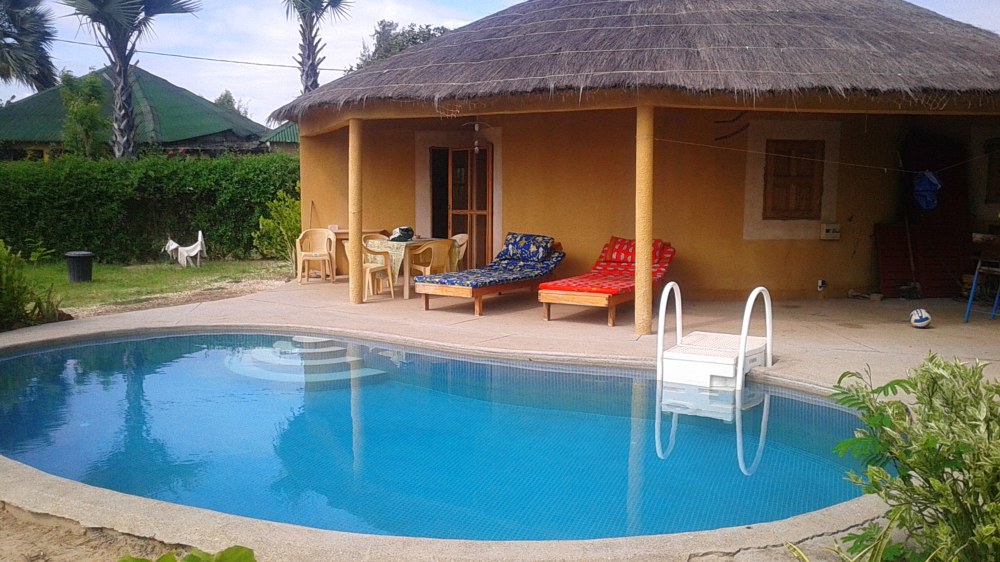

N'dangane est un village situé à 2h de Dakar, 1h30 de Saly, 4h de Saint Louis et environs 6000 kms de la France.
Information
Vous pouvez loger à 4 personnes.
En option, vous pouvez avoir une cuisinère ainsi qu'une femme de ménage. Mame vous accueillera à votre arrivée
et pourra vous proposez ses services.
En option, vous avez également Cheikh ( pronociation française : Chère) qui est le gardien et qui est aussi le
secrétaire général des piroguiers de N'Dangane. Il sera très competent pour vous proposer des ballades ou pêche
en pirogues dans tout le Siné Saloum.
La villa est climatisée et dispose de 2 chambres équipé d'une salle de bains ainsi qu'un wc. La maison est situé au
bord du Tan . Villa ombragée grâce à ses rogniers et sa terrasse couverte sur une parcelle de 1000 m². Aucun vis à vis tranquilité assurée.
Mes bon plans
Les activités sont diverses car N'dangane est au coeur sur Siné Saloum situé dans le parc national portant le même nom. Vous pouvez remonter le delta pour rejoindre la mer à travers la mangrove, les bolongs en pirogue traditionnelle. Pêche, réserves animalières ( Fathala pour les lions à 5 metres de vous), visites de village atypique ( Joal-Fadiouth , Mar lodge, Simal). Voici quelques adressses autour de N'Dangane :
Les collines de Niassam
C'est un hotel restaurant de charme atypique situé à Palmarin, on n'y mange très bien midi et soir. Vous pouvez également déguster un cocktail l'après midi sur la terrasse avec une vue imprenable sur le Siné Saloum. Sur le chemin vous passerez également à coté des puits de sel, à voir.
http://www.niassam.com/
Le Boundao Lodge
Situé à Yayeme, Olivier et son équipe vous accueillera pour manger midi et soir ou bien pour dormir dans des cases très bien décorées. La végétation en impose !! Ombre assurée pour une petite sieste autour de la piscine après un petit repas
http://www.boundaolodge.com/
Le Miam-Miam
Incontournable àDjilor pour manger le midi ou soir, du savoir-faire !! Pas d'hotel, pas de piscine , déco sympa on n'y vient pour manger et vous ne serez pas déçu . Vous pouvez aussi vous arretez pour dégustez une glace ..
http://restau-miam-miam.com/
Attention aux marées, vous pouvez vite vous faire pièger ( du vécu) si vous vous ballader hors route sur la pointe de Sangomar ( c'est l'estuaire et le début du Siné Saloum) notamment de Djiffer à Palmarin coté océan. Vous avez tout sur ce site https://mareespeche.com/af/senegal/pointe-de-sangomar